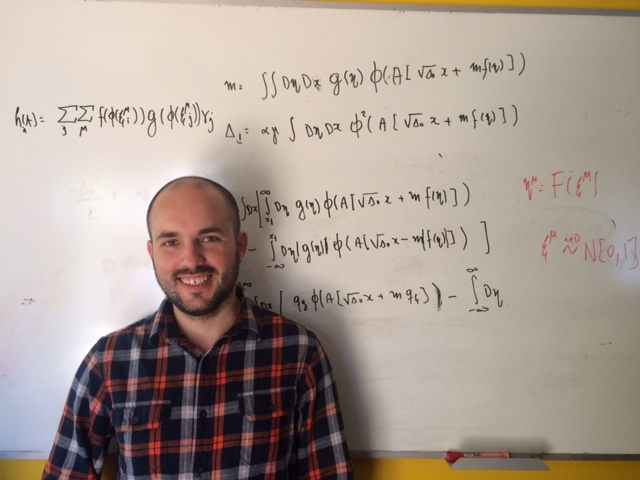

Ulises Pereira

I am broadly interested in understanding the mechanisms used by neural systems to represent and store information.
About me
I am fifth year PhD student at the Department of Statistics at the University of Chicago. My dissertation is focused on unsupervised learning of spatiotemporal attractors in neural networks. In particular:
- We have shown that learning rules inferred from in vivo recording in monkeys inferior temporal cortex (ITC) generate attractor dynamics, without any need for parameter adjustment or tuning. Furthermore, these rules produce storage capacities close to the maximal capacity, in a broad family of learning rules. Suggesting that learning rules in ITC are optimized to store a large number of attractor states.
-
Using mathematical techniques borrowed from spin glasses, We have shown that networks with learning rules inferred from ITC transition to a chaotic phase where an extensive number of fixed point attractors become chaotic attractors. Thus, the network performs robustly as an associative memory device, even though strong fluctuations are internally generated by its own chaotic dynamics. Presenting irregular temporal dynamics similar to the temporal and across trial variability observed during delay periods in multiple studies.
-
We have developed theoretical tools for analyzing the relation between inputs temporal statistics and learning of fixed point attractors and sequential activity in networks with plastic synapses. Additionally, using mean field theory techniques we have derived analytical equations for the storage capacity of sequences of activity.
Currently, I am working on developing tools for inferring online learning rules from neural recordings in ITC and building network models using these rules.
Publications
- U. Pereira, J. Aljadeff, N. Brunel. Chaos with Associative Memory Properties in Attractor Neural Network. In preparation.
- U. Pereira and N. Brunel. Unsupervised Learning of Persistent and Sequential Activity. In preparation.
- U. Pereira and N. Brunel. Attractor dynamics in networks with learning rules inferred from in vivo data. Submitted. [bioRxiv]
- U. Pereira, P. Coullet and E. Tirapegui. The Bogdanov–Takens Normal Form: A Minimal Model for Single Neuron Dynamics. Entropy. (2015).[paper]
- J. Vera, M. Pezzoli, U. Pereira, J. Bacigalupo and M. Sanhueza. Electrical Resonance in the θ Frequency Range in Olfactory Amygdala Neurons. Plos One. (2014). [paper]
- D. Contreras, U. Pereira, V. Hernández, B. Reynaert and J.C. Letelier. A loop conjecture for metabolic closure. Advances in Artificial Life, ECAL 2011. MIT press. (2011). Selected one of the ten best papers of ECAL 2011. [paper]
Contact
You can contact me writing to myname[at]uchicago.edu.